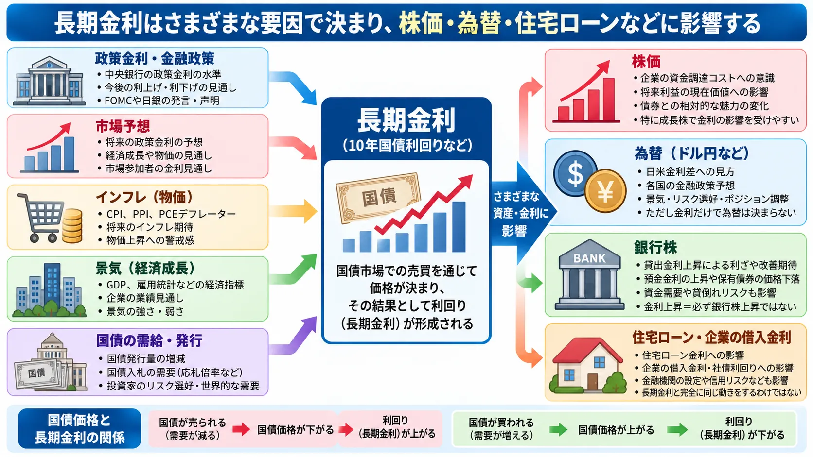

話題・トレンド
長期金利とは？政策金利との違いとなぜ株価に影響するの？初心者向けに解説
「米10年国債利回りが上昇」「日本の長期金利が高水準」といったニュースは、株式市場や為替市場でも頻繁に登場します。 しかし、長期金利は中央銀行が毎回直接決めている金利ではありません。 国債市場での売買を通じ、将来の政策金利予想、インフレ、景気、国債の需給など多くの要因を反映して形成されます。

Basic
長期金利とは？
長期金利とは、一般に期間の長い資金を貸し借りするときの金利を指します。 「何年以上なら必ず長期金利」という一つの数字だけを意味する言葉ではありませんが、金融市場では長期国債の利回りが代表的な指標として使われています。
日本
日本では、金融ニュースで10年国債利回りが「長期金利」の代表的な指標として扱われることが多くあります。
米国
米国でも10年米国債利回りが世界の金融市場で重要な長期金利の指標として注目されています。
つまり「長期金利」という正式名称の10年国債が存在するわけではありません。 10年国債利回りが、長期金利を観察する代表的な指標として利用されていると考えると分かりやすいでしょう。
Bond & Yield
長期金利と国債利回りはどう関係する？
長期金利を理解するには、まず国債の価格と利回りの関係を知る必要があります。 国債そのものについては「国債とは？」、 市場で債券が売買される仕組みについては「債券市場とは？」でも解説しています。
↓
国債価格が下がる
↓
利回りが上がる
↓
国債価格が上がる
↓
利回りが下がる
ここで注意したいのがクーポン（表面利率）・国債価格・利回りは同じものではないという点です。 既に発行された国債の利払い条件が変わらなくても、市場で取引される価格が変化すれば、その価格で購入した投資家から見た利回りは変化します。
Policy Rate
長期金利と政策金利は何が違う？
長期金利と政策金利は関連していますが、同じ金利ではありません。 詳しくは「政策金利とは？」でも解説しています。
| 項目 | 政策金利 | 長期金利 |
|---|---|---|
| 基本的な性格 | 金融政策上の金利 | 市場で形成される長期の金利 |
| 主な決まり方 | 中央銀行が金融政策として決定 | 国債市場などでの売買を通じて形成 |
| 米国 | FRBが金融政策を運営 | 米国債市場で形成 |
| 日本 | 日本銀行が金融政策を運営 | 日本国債市場で形成 |
| 代表例 | 短期金利に関係する政策上の金利 | 10年国債利回りなど |
FRBや日本銀行の政策は長期金利へ大きな影響を与える場合があります。 しかし、FRBや日銀が10年国債利回りを毎回直接決定しているわけではありません。
Market
長期金利は誰が決めているの？
長期金利は、一つの政府機関や中央銀行が自由に設定している数字ではありません。 国債市場で多くの投資家が売買することで価格が変化し、その結果として利回りが形成されます。
- 将来の政策金利予想
- インフレ期待
- 景気見通し
- 国債の需給
- 国債発行量
- 投資家のリスク選好
- タームプレミアム
タームプレミアムとは？
長期間にわたって債券を保有すると、その間にインフレや金利、経済環境が変化する可能性があります。 こうした長期保有の不確実性に対して投資家が求める上乗せ分を考えるときに使われる概念がタームプレミアムです。
Expectation
なぜ政策金利が変わっていなくても長期金利は動くの？
債券市場は「現在の政策金利」だけではなく、数カ月後・数年後の経済や金融政策も考えながら価格を形成しています。
↓
景気が想定より強いとの見方
↓
政策金利が高い状態が長く続くとの予想
↓
国債が売られる
↓
長期金利が上昇する場合
一方、金融政策予想とは別に、国債の需給から金利が動くこともあります。
↓
需給悪化への懸念
↓
投資家がより高い利回りを求める
↓
国債価格への下押し圧力
↓
長期金利が上昇する場合
したがって、「長期金利が上がった＝中央銀行が利上げした」ではありません。 政策金利が据え置かれている日でも、経済指標や国債入札、市場予想の変化によって長期金利は動きます。
Market Expectations
長期金利と市場予想の関係
金融市場では、発表された数字そのものだけでなく「事前の予想と比べてどうだったか」が重要になります。 この考え方は「市場予想とは？」で詳しく解説しています。
債券市場も同じで、現在の政策金利だけではなく「これから中央銀行がどう動くと市場が考えているか」が価格へ反映されます。
例えばFOMCで政策金利が据え置かれても、声明、経済見通し、FRB関係者の発言などから将来の金利見通しが変化すれば、米国債が売買され、長期金利が動くことがあります。
Dot Plot
長期金利とドットチャートの関係
ドットチャートは、FOMC参加者それぞれの政策金利見通しを点で示したものです。 ドットチャートが10年国債利回りそのものを決めているわけではありません。
↓
将来の政策金利に対する市場予想が変化
↓
国債市場が反応
↓
国債価格・利回りが変化
ドットチャートはあくまでFOMC参加者の見通しであり、将来の政策金利を約束するものではありません。
Inflation
長期金利とインフレの関係
インフレ率や将来のインフレ期待も、長期金利を見るうえで重要です。 物価上昇への警戒が強まると、将来の金融政策予想や債券を保有するために投資家が求める利回りなどを通じて、長期金利が上昇する場合があります。
物価指標については CPI、 PPI、 PCEデフレーターも確認しておくと、金利ニュースを理解しやすくなります。
また、名目金利だけでなくインフレを考慮した金利を見る場合は、 「実質金利とは？」も関連します。
ただし、インフレ率が上がれば必ず長期金利が上がるわけではありません。 市場が既にインフレを織り込んでいた場合や、景気悪化への警戒が同時に強まった場合など、反応が異なることがあります。
Economy
長期金利と景気の関係
景気が強い局面では、企業や家計の資金需要が増えたり、インフレへの警戒や金融緩和期待の後退が意識されたりすることで、長期金利が上昇する場合があります。
一方、景気後退への警戒が強まり、投資家が安全性を重視して国債を買う局面では、国債価格の上昇を通じて長期金利が低下することがあります。
米国景気を見る材料としては米国雇用統計なども注目されます。 実際の市場では景気・インフレ・金融政策・需給などが同時に作用するため、一つの要因だけで判断しないことが重要です。
Treasury Auction
国債入札と長期金利の関係
政府が国債を発行するときに行われる国債入札も、債券市場の需給を見る重要な材料の一つです。
↓
投資家需要が想定より弱い
↓
より高い利回りが求められる
↓
国債価格への下押し圧力
↓
長期金利が上昇する場合
入札では応札倍率、落札利回り、テールなどが需要の強弱を見る材料として使われます。 ただし、入札前に市場がどこまで結果を織り込んでいたか、同時刻の経済指標や金融政策予想なども影響するため、 「低調な入札＝必ず長期金利上昇」ではありません。
Supply
国債発行が増えると長期金利は上がる？
国債の発行量が増えると、市場に供給される国債が増えるため、需給面では金利上昇圧力になる場合があります。 投資家に多くの国債を保有してもらうため、より高い利回りが必要になるとの見方が強まることがあるためです。
しかし、実際の金利は投資家需要、景気、インフレ、金融政策、リスク回避需要、市場流動性などにも左右されます。 国債発行が増えても強い需要があれば、単純に金利が上昇するとは限りません。
Yield Curve
長期金利とイールドカーブの関係
イールドカーブとは、期間の異なる国債などの利回りを並べ、残存期間と利回りの関係を線で表したものです。
| 動きの例 | 考え方 |
|---|---|
| 長期金利の上昇幅 ＞ 短期金利の上昇幅 | カーブがスティープ化する場合がある |
| 長期金利の低下幅 ＞ 短期金利の低下幅 | カーブがフラット化する場合がある |
ただし、短期金利と長期金利のどちらが上昇・低下しているかによって、スティープ化やフラット化の背景は異なります。 カーブの形だけで景気や市場環境を単純に判断しないことが大切です。
Real Yield
長期金利と実質金利は何が違う？
ニュースで通常「米10年国債利回り」などと呼ばれる数字は名目金利です。 一方、実質金利は、物価上昇の影響を考慮して金利を考える概念です。
名目金利
市場で観察される通常の金利。10年国債利回りなどが代表例です。
実質金利
インフレの影響を考慮した金利。米国市場ではTIPSの利回りなどが実質金利を見る材料として参照されます。
実質金利は金（ゴールド）などの価格を考える際にも注目されることがあります。
Stocks
なぜ長期金利が上がると株価が下がることがあるの？
長期金利の上昇が株式市場で注目される理由には、主に企業の資金調達、株式価値の計算、債券との比較があります。
↓
企業の資金調達コストへの意識
＋
将来利益を現在価値へ割り引く際の金利上昇
＋
債券利回りの相対的な魅力変化
↓
株式の評価に影響
特に、現在の利益よりも将来の大きな成長を期待されている企業では、遠い将来の利益の現在価値が意識されやすいため、金利上昇が株価評価へ影響する場合があります。
ただし、「長期金利上昇＝必ず株安」ではありません。 景気や企業利益が想定以上に強いことを背景に長期金利が上昇している場合、株価も同時に上昇することがあります。 株価そのものが動く基本的な理由は「株価はなぜ上下するのか？」でも解説しています。
Banks
長期金利と銀行株の関係
金利上昇局面では銀行の貸出金利上昇などを通じて、利ざや改善への期待が高まる場合があります。 詳しくは「銀行株とは？」で解説しています。
- 貸出金利
- 預金金利
- 保有債券の価格
- 資金需要
- 貸倒れリスク
- イールドカーブ
長期金利だけで銀行の収益が決まるわけではありません。 預金金利の上昇や保有債券の評価、景気悪化による信用コストなども関係するため、 「金利上昇＝必ず銀行株上昇」と考えるのは単純化しすぎです。
FX
長期金利とドル円の関係
米国の長期金利が変化すると、米国と日本の金利差に対する見方などを通じてドル円相場が反応する場合があります。
例えば米国金利の上昇が米ドル資産の利回り上昇として意識されれば、ドル買い材料になる場合があります。 しかし為替市場には、日本の金利、日米の政策金利予想、景気、リスク選好、ポジション調整など多くの材料があります。
そのため、「米長期金利上昇＝必ずドル高・円安」ではありません。
Borrowing Costs
長期金利と住宅ローン・企業の借入金利
長期金利は金融市場だけの話ではありません。 市場金利の変化は金融機関や債券市場を通じて、家計や企業の資金調達環境へ波及することがあります。
- 住宅ローン金利
- 企業の借入金利
- 社債利回り
ただし、これらの金利が10年国債利回りと完全に同じ幅・同じタイミングで動くわけではありません。 金融機関の金利設定、借り手の信用リスク、期間、固定・変動の違いなども影響します。
Checklist
「長期金利上昇」のニュースを見るときのポイント
- どこの国の長期金利か
- 何年国債の利回りを指しているか
- 政策金利は変化したのか
- 市場の政策金利予想が変化したのか
- CPI・PCE・雇用統計などの経済指標が発表されたか
- 国債入札や国債発行などの需給材料があったか
- インフレ期待はどう変化したか
- 短期金利も同時に動いているか
- イールドカーブはどう変化したか
- 株・為替・金など他市場はどう反応したか
最も重要なのは、「金利が上がったから悪材料」と数字だけで判断しないことです。 景気の強さ、インフレ、金融政策予想、国債需給など、なぜ金利が動いたのかを一緒に確認するとニュースを理解しやすくなります。
Latest Update
直近の長期金利の動き
更新：2026年9月25日
米財務省が公表するDaily Treasury Par Yield Curve Ratesでは、 2026年9月24日の米10年国債のパー・イールドは5.18％となっています。 9月22日の4.96％、23日の5.11％から上昇しており、米国の長期金利は高い水準で推移しました。
日本についても、財務省は国債の流通市場における実勢価格を基に年限別の国債金利情報を日次で公表しています。 9月24日の市場では新発10年国債利回りが大きく上昇し、長期金利の上昇が注目されました。
この時期の金利上昇については、強い経済指標、インフレへの警戒、今後の金融政策に対する市場予想、 国債入札・国債需給、世界的な債券市場の動きなど複数の材料が意識されています。 一つの材料だけが長期金利上昇の原因だったと考えるのは適切ではありません。
※この項目は市場環境の変化に合わせて更新します。記事の基本解説部分は常設情報として利用できます。
確認した主な公的データ
- 米国：U.S. Department of the Treasury「Daily Treasury Par Yield Curve Rates」
- 日本：財務省「国債金利情報」
FAQ
長期金利に関するよくある質問
長期金利とは何ですか？
一般に、期間の長い資金を貸し借りするときの金利を指します。 金融ニュースでは日本や米国の10年国債利回りが代表的な指標として使われています。
なぜ10年国債利回りが長期金利として使われるのですか？
10年国債は長期国債市場を代表する年限の一つで、取引や情報量が多く、景気・インフレ・金融政策予想などを反映する指標として広く参照されているためです。
長期金利と政策金利は何が違いますか？
政策金利は中央銀行が金融政策として決定する短期金利に関係する政策上の金利です。 長期金利は国債市場などでの売買を通じて形成される市場金利です。
長期金利は誰が決めているのですか？
一つの機関が自由に決めているわけではありません。 国債市場での売買を通じ、将来の政策金利予想、インフレ期待、景気、国債需給などを反映して形成されます。
なぜ政策金利が変わっていなくても長期金利は動くのですか？
市場は現在の政策金利だけでなく、将来の政策金利、インフレ、景気、国債供給なども予想して国債を売買するためです。
国債価格と長期金利はなぜ逆に動くのですか？
既に発行された国債の利払い条件が同じなら、市場価格が下がるほど購入価格に対する利回りは高くなり、価格が上がるほど利回りは低くなるためです。
長期金利が上がると株価は必ず下がりますか？
必ず下がるわけではありません。 金利上昇は株式評価の下押し材料になる場合がありますが、景気や企業利益の改善を背景に金利と株価が同時に上昇することもあります。
長期金利が上がると円安になりますか？
必ず円安になるわけではありません。 日米金利差はドル円の材料の一つですが、日本の金利、政策金利予想、景気、リスク選好など多くの要因が為替を動かします。
国債入札と長期金利にはどんな関係がありますか？
入札需要が弱いと投資家がより高い利回りを求めていると受け止められ、市場金利の上昇材料になる場合があります。 ただし、入札結果だけで長期金利が決まるわけではありません。
Summary
まとめ
- 長期金利は、一般に長期間の資金を貸し借りするときの金利
- 日本・米国では10年国債利回りが代表的な指標として使われる
- 政策金利と長期金利は別物
- 長期金利は国債市場などでの売買を通じて形成される
- 国債価格と利回りは基本的に逆方向に動く
- 将来の政策金利予想、インフレ、景気、国債需給など複数の要因が影響する
- 国債入札も長期金利を動かす材料の一つ
- 長期金利はイールドカーブや実質金利とも関係する
- 株価、為替、銀行、住宅ローン、企業の借入金利など幅広い分野へ影響する
- 「長期金利上昇＝必ず株安・円安・銀行株高」などと単純には判断できない
長期金利のニュースを見るときは、金利が上がった・下がったという結果だけではなく、 「なぜ国債が売買されたのか」「市場は将来の景気・インフレ・金融政策をどう見ているのか」 まで確認すると、株価や為替の動きも理解しやすくなります。
一般ユーザー目線の体験でおすすめの会社をご紹介

ご利用にあたっての注意事項
本記事は金融・投資に関する一般的な情報提供および金融教育を目的としており、特定の金融商品・銘柄の購入、売却その他の投資行動を推奨するものではありません。 金利・国債価格・株価・為替などの市場環境はさまざまな要因によって変化し、記事内で紹介した関係が常に同じ形で現れるとは限りません。 投資判断を行う場合は最新の公式情報や契約締結前交付書面、商品説明書、目論見書等をご確認のうえ、ご自身の判断と責任で行ってください。